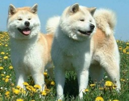

Ми раді вітати Вас на нашому порталі Світ собак. Він може стати в пригоді тим, хто вже має або тільки збирається придбати собаку і хоче виростити з неї вірного друга, надійного захисника та слухняного супутника.
Портал створений для того,
щоб допомогти Вам отримати всю необхідну інформацію про собак, щодо правильного їх догляду, виховання і лікування. Саме тут Ви зможете дізнатися про різноманітні породи собак, їх стандарти та підібрати для себе найкращу
тваринку, відповідно до Вашого темпераменту і можливостей. У розділі "Фото собак" Ви можете знайти підбірку фотографій наших хвостатих улюбленців в різних комічних ситуаціях. Бажаємо Вам приємного перебування на порталі
"Світ собак"!
Породи собак:
Акіта
Ця древня порода була виведена на острові Хонсю в області Акіта, звідки і одержала свою назву. Акіта залишалася незмінною в плині багатьох сторіч, будучи ізольованою на одному з японських островів.
У древні часи акіта використовувався як сторожова і бійцівська собака. Крім цього, акіта - чудовий мисливець і прекрасно працює по оленю і ведмедеві, у неї м'яка хватка і акіту також можна використати для полювання на водоплавного птаха.
Сьогодні акіта визнана національною собакою Японії й вважається природним пам'ятником цієї країни. Маленькі сувеніри із зображенням акіти часто дарують батькам новонароджених дітей, щоб побажати здоров'я і хворим людям, щоб виразити побажання якнайшвидшого видужання.
Бігль
В 14 столітті в Англії було популярне полювання на зайця з використанням невеликих собак схожих на бігля. Однак ця порода ще не мала цієї назви. Походження слова «бігль» точно не встановлено. Можливо, воно запозичене зі старо-французького, у якому слово «begeule» означало «широка глотка».
Ця назва стосувалася гавкотні цих собак. Інша версія назви породи стосується значення старо-англійського слова «begele» або кельтського «beag», які мали на увазі маленькі розміри цих собак і означають «маленький».
Перше відоме згадування цих собак з назвою «біглі» виявлено в англійській літературі в книзі «Худорідний есквайр», опублікованій в 1475 році. У книзі «Чотириногі тварини» (автор Биуїк, 1790) наводяться вкрай цікаві описи здібностей собак даної породи і мети її використання.
Мастиф
Цілком ймовірно, що англійський мастиф потрапив у Великобританію разом з фінікійськими торговцями приблизно в 6 столітті до нашої ери.
Моментально ця порода стала популярною як бійцівський собака. В основному мастифа використовували в кривавих забавах - цькуванні звіра (бика, ведмедя). Також мастиф прекрасно справлявся з охороною табунів і навіть був розповсюджений як захисник і охоронець.
Англійський мастиф - одна з найважчих порід собак. Кобелі мастифа можуть важити більше 100 кг! Це масивний потужний собака з величезними мускулами. Не раз мастифи потрапляли в книгу рекордів Гіннеса завдяки своїм розмірам і вазі. На сьогоднішній день мастиф не є небезпечним бійцівським собакою, зараз - це ніжний гігант, справжня собака-компаньйон. Він упевнений у собі, обережний і терплячий. Відмінно навчається, рідко гавкає, спокійний і слухняний.
Мопс
Міфи й легенди оточують мопса. Паг (англійська назва породи - Pug) - це прізвисько мавпи або собачки (словник Бейли М., 1731 рік). Є думка, що "Pug" походить від латинського "pugnus" - "куркуль" - так виглядає морда собаки в профіль. А може слово "pug" - це перетворена форма слова "puck" - ельф (дух-пустун) з п'єси Шекспіра та інших стародавніх творів. Думок багато.
За історичним даними попередники мопса - пекінес і левова собачка – походять зі Сходу (Китаю). У часи династії Шан (1751-1111 року до нашої ери) з'явилися перші доглядачі за собаками, у тому числі мопсів, які в той час вважалися мисливськими.
Перше згадування про короткомордих собак належить до 600 року до нашої ери. Мопсів пестили й плекали, слуги імператора доставляли їх до місця полювання на спеціальних носилках. Інші собаки добиралися своїм ходом. У період династії Хань (206-220 року до нашої ери) Китай поставляв у країни Заходу шовк, спеції, мопсів і пекінесів. Євнухи й придворні імператора розводили і мініатюрних собак, яких ретельно охороняли й обслуговували спеціальні слуги.